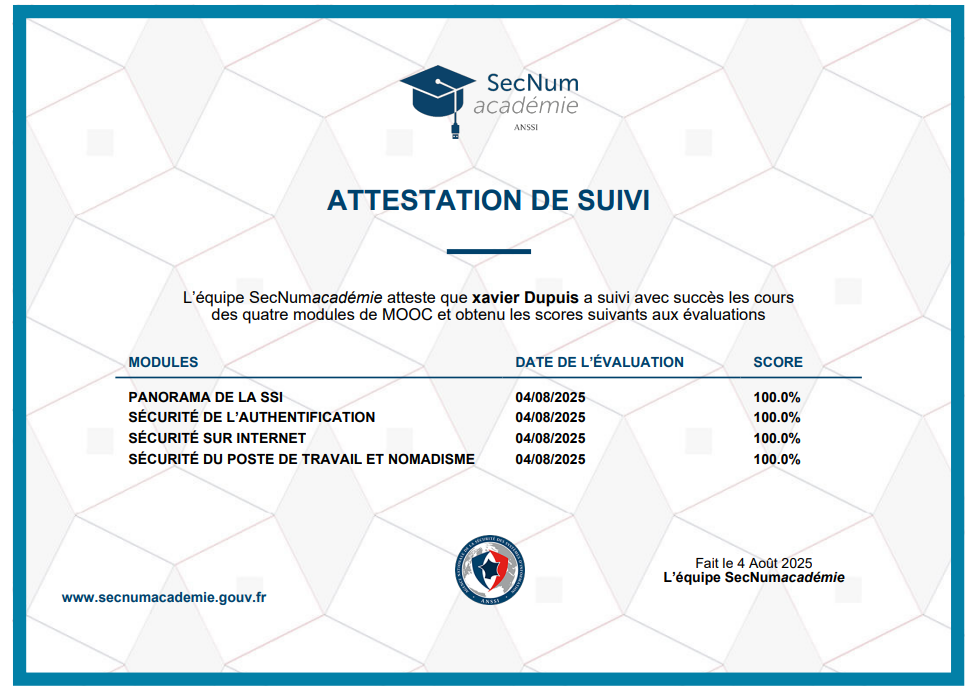
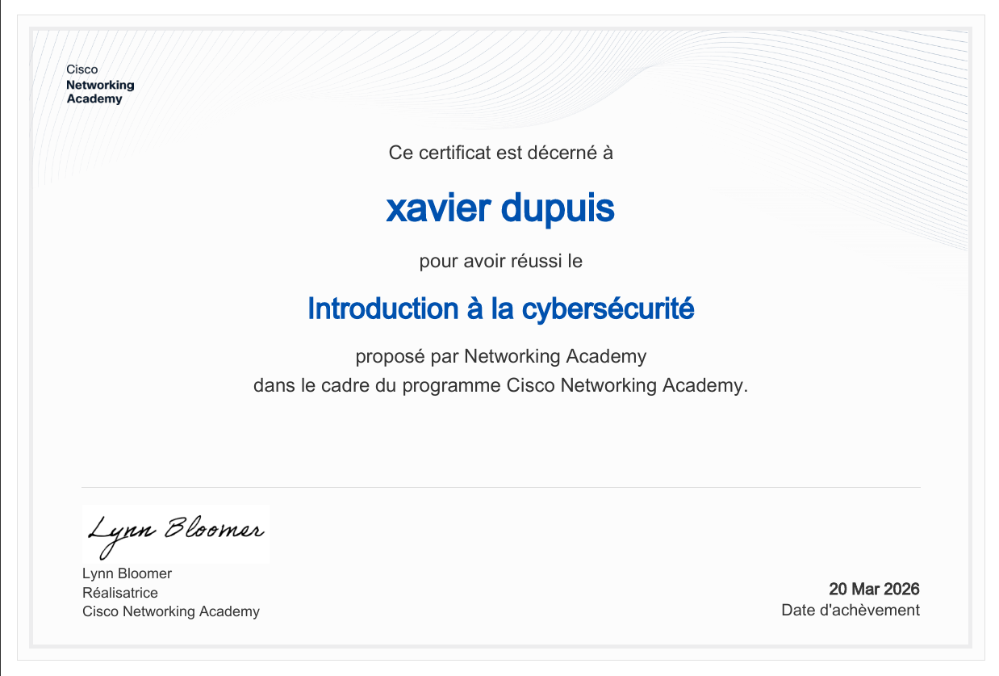
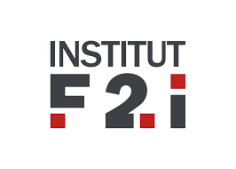

Bienvenue sur mon portfolio, je suis Dupuis Xavier | étudiant en BTS SIO SLAM.
Passionné par le développement d’applications, le web et l’informatique, je construis ce portfolio pour présenter mon parcours, mes compétences, mes projets réalisés en formation ainsi que ma veille technologique.
À propos de moi
Cette section présente mon profil, mon parcours et mon projet professionnel dans le cadre de mon BTS SIO option SLAM.
Présentation
Je suis Dupuis Xavier, étudiant en BTS SIO option SLAM. Je m’intéresse particulièrement au développement d’applications, à la conception de solutions métiers et à l’amélioration de l’expérience utilisateur.
Projet professionnel
Mon objectif est d’évoluer vers un métier de développeur full-stack, avec une forte appétence pour les projets web, les applications métiers et les outils utiles aux entreprises.
Qualités
- Rigueur
- Curiosité
- Capacité d’adaptation
- Volonté de progresser rapidement
Ce que montre ce portfolio
Ce portfolio rassemble mes projets réalisés durant le BTS, mes compétences techniques, mes certifications, ma veille technologique et mon environnement professionnel.
Compétences
Voici un aperçu de mes compétences techniques et méthodologiques développées durant ma formation et mes projets.
Langages
Frameworks / outils
Méthodes / concepts
Mes projets
Les deux projets ci-dessous sont les projets principaux que je présente dans le cadre de l’épreuve E6 du BTS SIO option SLAM.
Application de gestion de rendez-vous
Type : Application lourde / desktop
Ce projet a pour objectif de permettre à un professionnel de gérer simplement ses clients et leurs rendez-vous à partir d’une application locale claire, fluide et structurée.
- Gestion complète des clients : ajout, modification, suppression, recherche
- Gestion des rendez-vous : ajout, modification, suppression, filtrage par date
- Détection de conflits horaires pour éviter les doubles réservations
- Affichage plus ergonomique avec DatePicker, ComboBox et planning journalier
- Interface améliorée avec JavaFX et CSS
- écran gestion des clients
- écran planning des rendez-vous
- exemple d’ajout de rendez-vous
- exemple de conflit horaire
Application de chat
Type : Application web
Ce projet consiste à développer une application de messagerie en ligne permettant aux utilisateurs de s’inscrire, de se connecter, d’échanger des messages et à un administrateur de gérer les utilisateurs.
- Inscription / connexion / déconnexion
- Envoi et réception de messages
- Gestion des comptes utilisateurs
- Espace administrateur pour gérer les utilisateurs
- Correction et stabilisation du panneau d’administration
- page de connexion
- interface de chat
- panneau administrateur
- gestion des utilisateurs
🎓 Certifications
Cette section met en avant les certifications et formations complémentaires obtenues durant ma montée en compétences.
MOOC ANSSI
Formation portant sur les bases de la sécurité des systèmes d’information, les bonnes pratiques et les risques liés à la cybersécurité.

Cisco - Introduction à la cybersécurité
Certification Cisco Networking Academy obtenue dans le cadre de la découverte des bases de la cybersécurité.
Date d’achèvement : 20 mars 2026

Mon entreprise
Présentation de l’environnement professionnel dans lequel j’évolue.
Nom : Square IT Services
Localisation : Asnières-sur-Seine (92) – 25–29 quai Aulagnier
Statut : SAS fondée en 2006 – Conseil en systèmes et logiciels informatiques
Taille : Environ 50 à 100 collaborateurs
Domaines : Développement d'applications, intégration, gestion de projet
Partenaires : TIBCO, Denodo, Workato
Culture : Ambiance conviviale, montée en compétences, agilité
Square IT Services est une société de conseil informatique spécialisée dans l’intégration de solutions innovantes. Elle accompagne ses clients dans des projets de transformation numérique, avec un fort enjeu d’efficacité, de connectivité et d’automatisation.
Découvrir le BTS SIO
Le BTS Services Informatiques aux Organisations prépare aux métiers de l’informatique avec deux spécialités complémentaires.

Option SLAMOption SLAM
Développement d'applications web et desktop, programmation, gestion des bases de données, conception et maintenance de solutions logicielles.
Option SISR
Administration des réseaux, infrastructures, cybersécurité, support et maintenance des services informatiques.
Tableau de synthèse
Cette partie permet au jury de retrouver rapidement les activités menées, les compétences mobilisées et les projets associés à l’épreuve E6.
Veille technologique
Thème : L’importance de l’UX et de l’ergonomie dans les applications web et desktop
Objectif de la veille
Cette veille a pour objectif de comprendre l’importance de l’expérience utilisateur (UX) dans la conception d’applications web et desktop.
Pourquoi ce sujet ?
Lors de mes projets, j’ai constaté qu’une application fonctionnelle ne suffit pas : elle doit aussi être intuitive, claire, agréable à utiliser et adaptée aux besoins de l’utilisateur.
Ce que j’ai appris
- Importance de la simplicité visuelle
- Navigation claire et logique
- Feedback utilisateur (messages d’erreur, confirmations)
- Réduction des actions inutiles
- Meilleure lisibilité des informations
Application dans mes projets
- Utilisation de DatePicker et ComboBox dans l’application de rendez-vous
- Amélioration de la navigation entre les écrans
- Affichage plus lisible du planning
- Interface plus claire pour l’application de chat
- Ajout d’un panneau administrateur simple et accessible
Méthode de veille
- Consultation d’articles spécialisés sur l’UX/UI
- Ressources pédagogiques OpenClassrooms
- Vidéos YouTube orientées développement et ergonomie
- Documentation officielle des outils utilisés
- Observation et amélioration de mes propres projets
Conclusion
L’UX et l’ergonomie sont aujourd’hui essentielles dans le développement d’applications. Une application bien conçue ne doit pas seulement fonctionner : elle doit aussi être simple, efficace et agréable à utiliser pour répondre correctement aux besoins des utilisateurs.